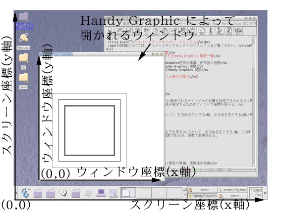

Handy Graphics では，ディスプレイ上に表示されるウインドウの位置を指定 するためのスクリーン座標と，ウィンドウ内の座標原点を指定するためのウ インドウ座標を用いる．
ディスプレイの左下を原点(0,0)として，右方向を正とするx軸，上方向 を正とするy軸とした座標．単位は画素．
ウインドウ内の描画可能な領域の左下を原点(0,0)として，右方向を正 とするx軸，上方向を正とするy軸とした座標．単位は画素．

はじめは，以下のテンプレートを用いてHandy Graphics関数を用いてく
ださい．
図形を描画するためのテンプレート
図形をファイルに保存するためのテンプレー
ト
なお，画像ファイルはファイルマネージャーからダブルクリックすると，
自動的にgvによって読み込まれ表示されます．（ただし，拡張子が
「.eps」であること．）
なお，現時点では画像ファイルでは日本語が表示できません（したがっ
て，プリントアウトしても文字化けする）．課題では，日本語を使わな
いようにしてください．
| HgWOpen(ウインドウの左座標, ウィンドウの下座標, ウインドウ の幅, ウィンドウの縦) | |
|---|---|
| 引数 | 実数型． HgWOpenで開くウィンドウのスクリーン座標． |
| 戻値 |
整数型． HgWOpenは複数のウィンドウを開くことができる． 他の図形描画関数が，どのウィンドウに対して動作するか 他の関数はこの戻値を使って表す． |
| HgWClose(w) | |
|---|---|
| 引数 | 整数型． HgWOpenの戻値で，どのウィンドウを閉じるか指定する． |
| HgWInitEPS(w,"ファイル名.eps") | |
|---|---|
| 引数 |
w: 整数型．
HgWOpenの戻値で，どのウィンドウの内容を描画するか指定する．
"ファイル名.eps":文字型配列 |
以下に示す関数の座標は，すべてウィンドウ座標である．
ウインドウ座標を示すときは，必ず実数(小数点の付いた数）を用いる
こと．
また，第一引数 w は，描画するウインドウを表し，HgWOpenの戻値を
引数として渡す．
(各関数をクリックすると使用例が表示されます．)
HgWline(w, 始点x座標, 始点y座標, 終点x座標, 終点y座標)
（実行結果）
HgWCircle(w, 中心x座標, 中心y座標, 半径)
HgWCircleFill(w, 中心x座標, 中心y座標, 半径)
（実行結果）
以下に示す関数の座標は，すべてウィンドウ座標である．
ウインドウ座標を示すときは，必ず実数(小数点の付いた数）を用いる
こと．
また，第一引数 w は，描画するウインドウを表し，HgWOpenの戻値を
引数として渡す．
(各関数をクリックすると使用例が表示されます．)
HgWArc(w, 中心x座標, 中心y座標, 半径, 始点角度, 終点角度)
（実行結果）
HgWFan(w, 中心x座標, 中心y座標, 半径, 始点角度, 終点角度)
HgWFanFill(w, 中心x座標, 中心y座標, 半径, 始点角度, 終点角度)
（実行結果）
HgWPoligon(w, 頂点の数, 頂点のx座標を格納した配列, 頂点のy座標を格納した配列)
hgWPolygonFill(w, 頂点の数, 頂点のx座標を格納した配列, 頂点のy座標を格納した配列)
（実行結果）
HgWClear(w)
HgWClearを呼び出すと，ウィンドウ内が消去されます
HgGray(グレーの濃度)
HgRGB(赤色の濃度, 緑色の濃度, 青色の濃度)
HgWClolor(w, 色)
グレー濃度： 0.0~1.0の値
各色の濃度： 0.0~1.0の値
色： HgGray,HgRGBの戻値
HgWWidth(w, 線の太さ)
線の太さは，0.0以上の実数で指定
（実行結果）
{kind=link}
{kind=link}
{kind=link}
{kind=link}
{kind=link}
{kind=link}
{kind=link}